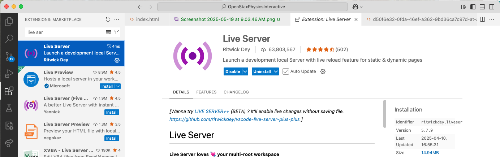

Here I outline the steps to modify the text.
Getting started with Git
To start, you will need to get a copy of the repository on your computer with Git. The repository can be found here. One easy way to do this is using GitHub Desktop. You can also use a more traditional approach by cloning the repository using the terminal. Either method is fine as long as you can edit the files and push your changes back to the online repository.
To clone the repository, follow the link to the repository and press the "Code" button. If you wish to clone the repository using the terminal, you can copy the URL from the text box provided. If you wish to use GitHub desktop, press the "Open with GitHub Desktop" button. It will then prompt you to download GitHub Desktop (if you don't already have it), and create a copy of the respository on your computer. Avoid pressing the "Download ZIP" button. It will give you all the files but won't connect it to the online repo or allow you to upload your changes.
Tour of the repository
The main textbook files are located in the folder labeled "textbook_files". These files come from the OpenStax EPUB textbook for University Physics volumes 1, 2, and 3. All of the image files and HTML files are located in this folder. The javascript files that make code chunk files possible are located in the root directory along with the home index.html file. The folder named "other_tools" contains a few Python scripts that are useful in generating or modifying the text HTML files. The Python script titled "extract-stuff.py" should not be run. It was used to initially create the HTML files from the EPUB format. It is only kept as a reference. A few modifications were made to the HTML files during the extraction process, including adding a link to the table of contents to each page, which was not originally present.
Workspace and Live Server
The way I have worked for editing the text is in Visual Studio Code. Though the static HTML files can be opened in a web browser and used to view the text, the interactive Python cells do not run in this static setting. To enable to the HTML files to work, I used the Live Server extension in Visual Studio Code. This hosts a copy of the website locally. The new hosted website doesn't suffer the same problem that the static files do, and the interactive code snippets can be viewed properly.
The Live Server extension can be downloaded from the Extensions tab in Visual Studio Code. This extension will add a button to the bottom bar of the editor labeled "Go Live." To enable to live server, open the file you would like to view, then push the "Go Live" button. The local live version of the HTML should then open in your web browser.
Finding a textbook section file
The quickest way of finding a textbook section file is to initialize the Live Server from the index file.
Then navigate to the chapter or section page you wish to edit using the web browser. Once you have found the file you would like to edit, make note of the URL for the file you have located.
An example URL might be http://127.0.0.1:5500/textbook_files/d50f6e32-0fda-46ef-a362-9bd36ca7c97d-at-aa8a43e-colon-a72e87ba-5cfb-4899-b11e-60d7c25ae36a.html.
Specifically make note of the string that comes right after "-colon-". In this case it was a72e87ba. The HTML files for each text section are unique in the 8 digits after the substring "-colon-".
At this point I will open up the file browser, open the textbook_files folder, and extend the window it until it barely shows the 8 digit substring after "-colon-" (as shown above). I will then browse through until I have found the subtring that matches the section I am looking for.
If you know how to open a file by specifying its path, you could navigate to the sections a lot quicker. I was not able to figure that out, but I have noticed some things that help to find the files quicker when browsing for them. I will give some patterns that I have noticed that may help you in locating the file you wish to edit. When sorted in alphabetical order, the files seem to be organized in the following way. There are three groups of HTML files, separated by groups of jpeg files. Each group seems to give each volume of the textbook. Volume 2 is given first, the second group is Volume 3, and the Volume 1 files are in the last group. Additionally, there is some organization to the 8 digit strings in each section, as determined by alphabetical order. The strings that start with one numeric digit and follow with a letter digit are typically first. Following those are the strings with two numeric digits at the start, and so on. After the strings that are only numeric digits come the strings that start with a letter digit, and these are in alphabetical order.
Modifying the HTML files
As the HTML files were extracted from EPUB format, they are not written to be especially readable. Part of the difficulty is that the equations (which are not uncommon in a physics text) are written in MathML format, which is not a concise as other formats such as LaTeX. For example, the equation is written as
<span class="os-math-in-para">
<math xmlns="http://www.w3.org/1998/Math/MathML" display="inline">
<mrow>
<mi>x</mi><mo stretchy="false">(</mo>
<mi>t</mi><mo stretchy="false">)</mo>
<mo>=</mo>
<mfrac><mrow><mi>a</mi></mrow><mrow><mn>2</mn></mrow></mfrac>
<msup><mi>t</mi><mn>2</mn></msup>
<mo>+</mo><msub><mi>v</mi><mn>0</mn></msub><mi>t</mi>
<mo>+</mo><msub><mi>x</mi><mn>0</mn></msub>
</mrow>
</math>
</span>
Though HTML can be very forgiving about syntax errors, make an effort to keep opening and closing tags organized. For example, if you want to insert a paragraph after another paragraph, make sure to put your <p> and </p> after the closing tag </p> of the previous paragraph.
Adding an example
The OpenStax text has worked examples that are distinguished by a red bordered box. It also has "Check Your Understanding" exercises that are delineated with an orange bordered box. In addition to these I have added support in the style sheet for a green bordered "Python Skill" box for teaching crucial Python skills, as well as a purple bordered "Numerical Methods Example" box for demonstrating more advanced code examples, where the purpose is to see something that one could learn more about in the future.
To add a check your understanding box, paste the following HTML tags to start the box:
<div data-type="note" class="check-understanding"><h3 class="os-title">
<span class="os-title-label">Check Your Understanding </span>
<span class="os-number">(number)</span>
<span class="os-divider"> </span>
</h3>
<div class="os-note-body">
<div data-type="exercise" class="unnumbered os-hasSolution">
<div data-type="problem"><div class="os-problem-container">
To close the box paste the following:
</div>
</div>
</div>
</div>
</div>
HTML is not very picky about elements being closed properly; it will still try to display the page anyway. It is important that you are careful about closing elements because HTML won't give you a warning about it. For this reason, also be careful about where you place your inserted material, being aware to place inserted material after the closing tags for the previous material.
More often you will likely want to add worked examples. To add a regular red-bordered example (used for traditional examples not directly related to Python, though they could use Python as part of the example), paste the following opening HTML tags:
<div data-type="example"><h3 class="os-title">
<span class="os-title-label">Example </span>
<span class="os-number">(example number)</span>
<span class="os-divider"> </span>
</h3>
<div class="body">
and close the example using
</div>
</div>
to close the red bordered-box. To include a green "Python Skill" box (used for teaching things that students should learn to do with Python), paste the following opening tags:
<div data-type="codeskill"><h3 class="os-title">
<span class="os-title-label">Python Skill </span>
<span class="os-number"> </span>
<span class="os-divider"> </span>
</h3>
<div class="body">
and close the example using:
</div>
</div>
To include a blue "Numerical Methods Example" (used for demonstrating more advanced numerical methods, typically for demonstrating things that students will see in later classes), paste the following opening tags:
<div data-type="codeexample"><h3 class="os-title">
<span class="os-title-label">Numerical Method Example </span>
<span class="os-number"> </span>
<span class="os-divider"> </span>
</h3>
<div class="body">
and close the example using:
</div>
</div>
Note that all three of the example types require two closing </div> tags.
Inside the example you may add whatever you like. Typically text is surrounded in a <p> and </p> tag. These tags delineate paragraphs.
To separate paragraphs you can put text in separate pairs of <p> and </p> tags.
Including math as well as the Python code cells is discussed in the next sections.
Much of the HTML from the original text has "id" and "data-sim" attributes. I believe this allows links to direct you to a specific part of the page rather than just to the page in general. I have not currently added this functionality to any of the inserts I have made.
Adding an equation
As I mentioned earlier, math equations are written in MathML format, rather than in LaTeX. If you wish to add an equation to the text, I have included a Python script that converts LaTeX code to MathML format for you to paste into the HTML files. The script is in the "other_tools" folder and is called "latex-to-mathml.py". To use the Python script, enter the LaTeX equation you wish to include as a string in line 4. You do not need to include the dollar signs that typically surround math in LaTeX. Running the script will cause the MathML to be printed in the console.
You may choose to indent the MathML to take up more than one line, but HTML will render it either way, and there isn't a limit to the length of a line in HTML. For this reason, I have typically put the equations as one long line in the HTML file, and continue with text on the next line. MathML equations may be placed inside the paragraph tags, so you can use them for inline equations.
Adding a Python code cell
Inserting a Python code cell into the text is simple as long as you correctly add code support to the page first. To add code support to the page, you must paste
<!-- Add these three lines to add code chunk availability -->
<link href="https://cdn.jsdelivr.net/npm/bootstrap@5.1.3/dist/css/bootstrap.min.css" rel="stylesheet"
integrity="sha384-1BmE4kWBq78iYhFldvKuhfTAU6auU8tT94WrHftjDbrCEXSU1oBoqyl2QvZ6jIW3" crossorigin="anonymous">
<script src="https://cdn.jsdelivr.net/pyodide/v0.27.2/full/pyodide.js"></script>
<script type="module" src="../code-chunk-resources.js"></script>
into the header of the HTML file. I typically paste it in a new line just after the line that reads
<link rel="stylesheet" type="text/css" href="the-style-epub.css"/>In addition to this, paste the following at the end of the body:
<!-- These scripts run at the end of the file to make code cells work -->
<script src="https://cdnjs.cloudflare.com/ajax/libs/codemirror/5.63.3/codemirror.min.js"
integrity="sha512-XMlgZzPyVXf1I/wbGnofk1Hfdx+zAWyZjh6c21yGo/k1zNC4Ve6xcQnTDTCHrjFGsOrVicJsBURLYktVEu/8vQ=="
crossorigin="anonymous" referrerpolicy="no-referrer"></script>
<script src="https://cdnjs.cloudflare.com/ajax/libs/codemirror/5.63.3/mode/python/python.min.js"
integrity="sha512-/mavDpedrvPG/0Grj2Ughxte/fsm42ZmZWWpHz1jCbzd5ECv8CB7PomGtw0NAnhHmE/lkDFkRMupjoohbKNA1Q=="
crossorigin="anonymous" referrerpolicy="no-referrer"></script>
<script type="module" src="../initialize-pyodide-chunks.js"></script>
I usually paste this just after the line that reads
<a href="university-physics-volume-1.toc.html">Back to table of contents</a>or similarly for the other two volumes.
The code added to the header imports the javascript file that I wrote that defines how the code cells work. This javascript file is located in the root directory of the repository. The code in the header also links to to external websites, used for styling the code cells and allowing code highlighting to work.
Each page has a shared Python environment. The code pasted at the bottom of the page initializes the Python environment after all the visual elements have been created. It then passes a reference of the initialized Python environment to each of the code cells. This is what allows code cells to share the same variables. The code at the end references the two external sites for styling again, and it also reference the "initialize-pyodide-chunks.js" javascript file which is also located in the root directory.
Once you have added these two code segments to the HTML file, the page now supports Python code cells. To add a Python code cell, use the tags
<python-code-cell>(Paste python code here)</python-code-cell>putting your default code inside the tags. Python code may (and should) take up more than one line. This is the default value of the code. When the user presses the reset code button, this is the code that it resets to. Make sure that your indenting is correct for Python. A Python tab is four spaces. Indenting lines that should not be will cause the Python to not run properly. A non-indented line should have no spaces at the start.
There is also a collapsable code cell that starts collapsed by default. I used these cells for providing code templates in the problem set, as well as for providing calculator work to non-code related examples. To do a collapsable code cell, instead use the tags
<python-code-cell hideable>(Paste python code here)</python-code-cell>Imbedding other resources
Many places in the textbook link to PhET simulations, or YouTube videos. With the ability to edit the HTML, we can imbed these resources directly into the textbook so students don't need to leave to view these extra materials, thus reducing friction in the learning setting.
To embed a PhET simulation, locate the PhET simulation from the list of PhET simulations found here. To embed a PhET simulation it must be one that supports HTML5. There are a few that do not.
After locating the desired PhET simulation, press the embed resource button. It will then give you the HTML code that you need to paste into the HTML file for the text. Most of these will likely be pasted inside the "Interactive" boxes in the text.
Imbedding a YouTube video is similar. Many of the "Interactive" boxes in the text feature YouTube videos. To imbed a YouTube video, locate the video you wish to embed, press the share button, then press the embed button. It will then give you the HTML code you need to paste into the text. You can also choose to imbed the video starting at a certain point in the video.
There are likely other things you wish may with to imbed and they can be imbedded in a similar way. The YouTube and PhET resources are particularly interesting because the original text already links to them.